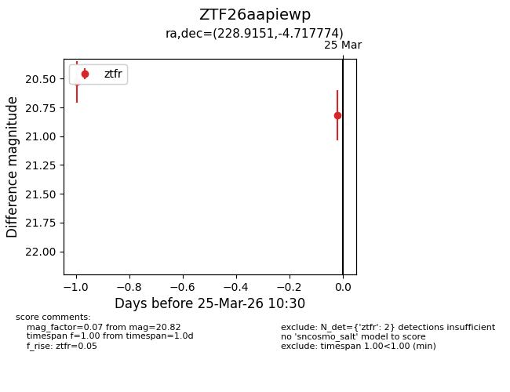
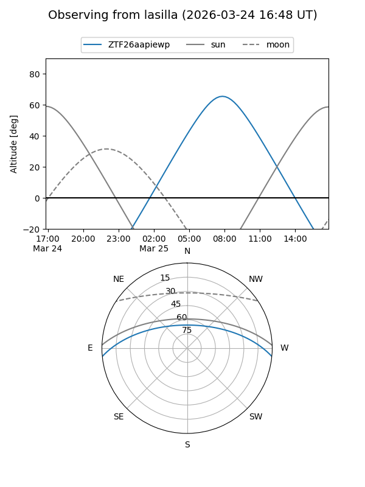
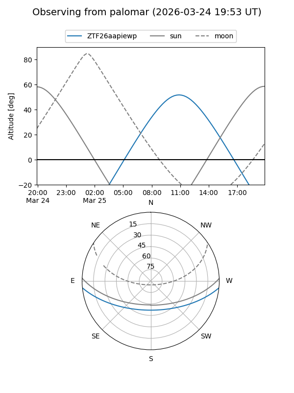

ZTF26aapiewp
Target ZTF26aapiewp at 2026-03-25 10:33
Aliases and brokers:
FINK: link
Lasair: link
ALeRCE: link
alt names
ZTF26aapiewp (ztf,fink_ztf)
Coordinates:
equatorial (ra, dec) = 228.9151,-4.71777
equatorial (HMS+DMS) = 15:15:39.63,-04:43:03.98
galactic (l, b) = (356.0210,+42.80971)
Flags:
Photometry:
last ztfr=20.82
2 ztfr detections
Lightcurve

Visibility


Additional plots